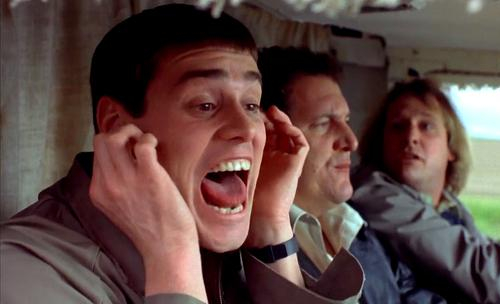
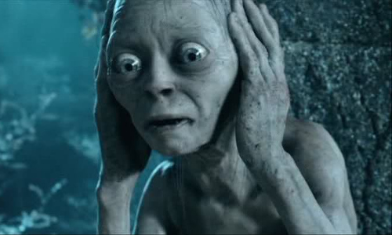

Hope Wins over Fear
In the midst of a larger post about the results of the EU referendum, I talked about the echo chamber in the campaign. I want to explore that a tiny bit more.
You also may remember that in a post before the referendum, I talked about myself as an undergraduate and how I was very passionately pro-EU but over time, the doubts set in, especially after the crash in 2008 and the EU’s harsh measures metered out to Greece.
As I started 2016, the doubts and problems with the EU had not yet pushed me into the idea that the UK should ever leave the EU; I started 2016 as a reluctant but firm ‘remanian’.
However, I wanted to make the decision based on all the information and up to date arguments. I turned to other people, both on Twitter and in the real world.
I soon ran into a problem, even discussing my own doubts was beyond the pale with anyone pro-EU, you must support the EU because that is what you do.
On Twitter it was worse, loudly unfollowed by 20-30 people, regularly blocked in the middle of a seemingly civil discussion over a technical EU matter.
I was shocked the first time, saddened the second time, third time it was water off a duck’s back, I stopped noticing or caring when someone threw their toys out of the pram.
I did try to carrying on to discuss with any remainian who wanted to, in the hope they would come up with the magic argument that would put me squarely back in the remain camp. It soon became apparent that everyone else has the same doubts and concerns.
Unlike ten years ago where you could easily encounter British Europhiles who wanted to join the Euro and the Schengen Area and so on, now ardent Europhiles seem a bit thin on the ground.
I met no-one that had a positive view of the EU as a force that will make things better, it was just what you did about the faults, whether you just lived with them in a fatalistic fashion or tried to face up to them by leaving (and potentially making a lot of new issues/opportunities).
A lot of the remain argument was that uneducated and poor people want to leave, so don’t be in that group since they are all racists and bigots. Well I was brought up in very modest circumstances indeed and these are my people and I don’t recognise that description.
Meanwhile, the leavers were just more fun and upbeat people. They were happy to listen, discuss and gently point out their views.
I guess the morals of the story are that if you want to campaign for something, have the most hopeful message. Even if you are against something, have the best plan for fixing or replacing or leaving it behind. Blocking people doesn’t win votes in real elections.
Above all, the moral is Twitter is probably a crap place for discussing politics.